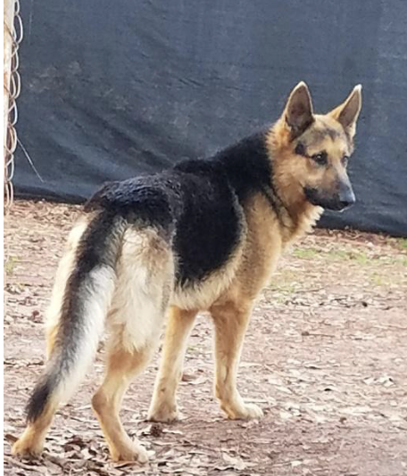
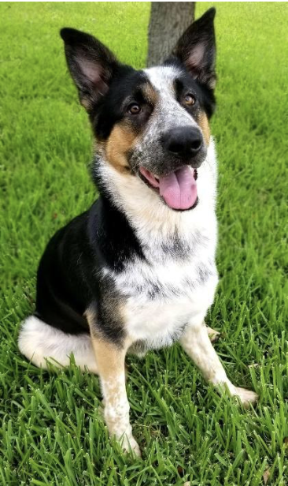
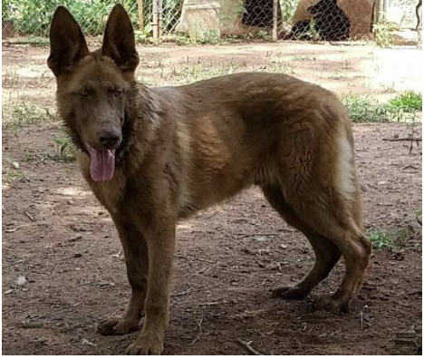

*Disclaimer – I am not a geneticist, just a fan of the breed. This article is based on my own research.
German Shepherds come in a variety of coat colors and lengths. While varying
greatly, coat color and length have no bearing on the dog’s personality or
trainability. The AKC recognizes many of these colors while adhering to the
breed founders statement, “No good dog can be a bad color.” What constitutes
a bad color in GSD’s? To find the answer to that question, let’s look at what
this breed was designed for.
The American Kennel Club (AKC) lists the German Shepherd in the Herding group.
While “Shepherd” is certainly in the breeds name, they can also be classified as
a working dog. Max von Stephanitz, the breed’s creator and founder of the parent
club for GSD’s bred the first German Shepherd, Horand von Grafrath, to be a herding
dog. Horan was a brindle, or sable, dog. Von Stephanitz wanted a dog that would be
easy to see among the herd of sheep, but hard to see at night while guarding. It is
for this reason White German Shepherds cannot be shown in AKC confirmation rings.
(There is now a movement to have these white dogs recognized as a separate breed,
the American White Shepherd. For use in this article, though, they will be considered
as regular GSDs.)
When you think of German Shepherds I am sure you picture those beautiful Black and Tan
Police dogs or Rin Tin Tin, one of three dogs and two GSD’s with his own star on the
Hollywood Walk of Fame. , these Black and Tan dogs are not the original GSDs.
As stated above, the original German Shepherd Dog was a sable male, Horand von Grafrath.
Capt. von Stephanitz admired this dog for his loyalty and obedience. All German Shepherds
can be traced back to this dog. Because of this, Sable is the most dominant of the coat colors.
Genetics
Now we will get to the genetics of coat colors. A puppy inherits half of its genes from each parent.
What color presents, or is shown, on the puppy is determined by the colors dominance. For example, if
your mother has blue eyes and your father’s eyes are brown, chances are your eyes will be brown as well
as brown eye color is dominant to blue. When a puppy inherits two different genes from their parents,
it is considered heterozygous. This means that a puppy can inherit one dominant Sable gene (SS) and one
recessive Black gene (bb). The puppy will present as Sable, but will be heterozygous and carry the gene
for black. If this puppy is then bred to a dog that is homozygous, or who has received only the black
recessive gene from both its parents, this puppy could still father puppies who present with that recessive
color as well as puppies that present with the more dominant sable.
Table 1
AW+a
AW+a
AW+a
AW+a
The Punnett Square above shows a Homo Sable bred to a Homo Black. As shown by
the capital letters, the four puppies in this litter will all present as Sable.
Below is an example of when one of these puppies is bred to a homo black as well.
Table 2
AW+a
AW+a
AW+a
a+a
Based on the tables above, you will have a litter of sable puppies that, if bred to a solid
black, will produce both sable and black. Table 3 shows the colors of German Shepherd Dogs in order of dominance.
Table 3
Sable (aw)
Always dominant, never recessive. If a puppy inherits this gene, it will be a sable puppy.
Black/Tan or Saddle/Blanketback (as)
Recessive to sable, dominant to all others
Bi Color (at)
Recessive to sable and black/tan
Solid Black (a)
Recessive
White (w)
Recessive (masking gene)
German Shepherds that carry multiple genes can have a very mixed litter. This is where
knowing your dog’s pedigree comes in handy. It also helps to have a basic knowledge of
the GSD genetics. For example, a solid black GSD will only produce solid black if bred
with another solid black, whereas if bred to a bi color that is heterozygous and carries
the black gene (at+a), you may have a mix of solids and bi colors.
Where does white come into play? White German Shepherds are colored dogs with the White
masking gene, not albino. This gene is recessive to all colors in GSDs and will only
show up if the pup inherits it from both parents. This gene hides all color and pattern,
making the dog white. If bred to any colored dog, unless the colored dog carries the
masking gene, all of your puppies will be colored.
Table 4
as+w
as+w
as+w
as+w
These puppies will all be Black and Tan puppies, but will carry the gene to produce
white puppies. If you were to breed one of these puppies to a dog that has two white
parents and can only contribute that masking gene, then you have a chance of getting
solid white puppies as well as Black and Tan.
When you look at the order of dominance for German Shepherds, you notice that Sable,
Black and Tan and Bi Color are all dominant. What would happen if you were to breed a
Sable to a Bi Color or Black and Tan? While most of those puppies
would be sable, you may also get what is known as a “Patterned Sable.” Patterned sables are very
recognizable because they have what is known as the “classic” saddleback or blanket
back pattern, but replacing the black is sable. These dogs are capable of producing,
not just sables, but black and tan or bi color as well. The picture to the left is a
great example of a patterned sable. She has produced both sable and black and tan
puppies.
 Recently,
there has been some controversy regarding Panda Shepherds. These are German Shepherds
that have a lot of white covering their fronts with a traditional Black and
Tan pattern. Some people feel that the collie or some other breed that has patterns
like this were introduced into the line. This anomaly was first seen in only one line
of German Shepherds and only one puppy was born in a litter of otherwise “normal” black
and tan puppies with homozygous black and tan genes.
Frankie, the GSD born with the panda pattern’s, DNA was sent for testing. The breeder
wanted to make sure that no other dog had somehow gotten into her kennels and bred with
her bitch. The genetic testing proved that Frankie was, indeed, a purebred German Shepherd.
The gene responsible for her unique coloring came from her father. She was the one and only
panda produced from this dog. All Panda Shepherds can trace their ancestry back to her.
Is the Panda gene dominant or recessive? It is a quite unique gene. If the puppy inherits
the panda gene from one parent, it will show. Panda Shepherds can be carriers of other
colors. The panda above has a panda sire and a blue and tan dam. He was born in a litter
of panda, black and tan and one white. Because of this he carries blue, black and tan,
white and panda. Because he carries the Panda gene, however, his phenotype (presenting
color) is Panda. Very recently, there have been German Shepherds that show the piebald
gene. This is a recessive white spotting gene. This gene can cause either a small patch
of white, or a mostly white dog. These dogs seem to have a type of masking gene similar
to the solid white GSD, but that doesn’t cover the entire dog. Puppies born with this gene
can, genetically, be any color with the white covering it.
The AKC accepts
all colors for registration, Canine Good Citizen and Agility competitions,
but not for confirmation. That is not saying that you cannot show your liver, blue, white
or Panda. Blue, liver and pale, washed out coats are serious faults according to the breed
standard. White dogs are disqualified. Why is that? The AKC breed standard for the German
Shepherd Dogs counts blue, white, liver, panda and any dog with any piebalding as against
the breed standard. These colors will show up in “regular” colored dogs, but many breeders
will sell them with limited registration and spay/neuter contracts or even go so far as to
cull any off colored puppies so as not to tarnish their breeding reputation.
This doesn’t mean that these Shepherds are any less than their normal colored
counterparts. If the breeder is a respectable breeder, they will be breeding based on
the breed standard regardless of what colors they breed.
 creator and founder of the parent
club for GSD’s bred the first German Shepherd, Horand von Grafrath, to be a herding
dog. Horan was a brindle, or sable, dog. Von Stephanitz wanted a dog that would be
easy to see among the herd of sheep, but hard to see at night while guarding. It is
for this reason White German Shepherds cannot be shown in AKC confirmation rings.
(There is now a movement to have these white dogs recognized as a separate breed,
the American White Shepherd. For use in this article, though, they will be considered
as regular GSDs.)
creator and founder of the parent
club for GSD’s bred the first German Shepherd, Horand von Grafrath, to be a herding
dog. Horan was a brindle, or sable, dog. Von Stephanitz wanted a dog that would be
easy to see among the herd of sheep, but hard to see at night while guarding. It is
for this reason White German Shepherds cannot be shown in AKC confirmation rings.
(There is now a movement to have these white dogs recognized as a separate breed,
the American White Shepherd. For use in this article, though, they will be considered
as regular GSDs.) When you look at the order of dominance for German Shepherds, you notice that Sable,
Black and Tan and Bi Color are all dominant. What would happen if you were to breed a
Sable to a Bi Color or Black and Tan? While most of those puppies
would be sable, you may also get what is known as a “Patterned Sable.” Patterned sables are very
recognizable because they have what is known as the “classic” saddleback or blanket
back pattern, but replacing the black is sable. These dogs are capable of producing,
not just sables, but black and tan or bi color as well. The picture to the left is a
great example of a patterned sable. She has produced both sable and black and tan
puppies.
When you look at the order of dominance for German Shepherds, you notice that Sable,
Black and Tan and Bi Color are all dominant. What would happen if you were to breed a
Sable to a Bi Color or Black and Tan? While most of those puppies
would be sable, you may also get what is known as a “Patterned Sable.” Patterned sables are very
recognizable because they have what is known as the “classic” saddleback or blanket
back pattern, but replacing the black is sable. These dogs are capable of producing,
not just sables, but black and tan or bi color as well. The picture to the left is a
great example of a patterned sable. She has produced both sable and black and tan
puppies.